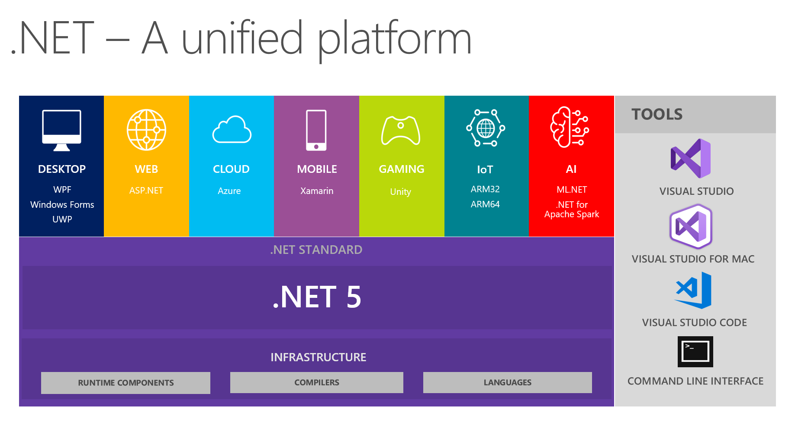

Introduction to C#
It is an object-oriented programming language created by Microsoft that runs on the .NET Framework.
C# has roots from the C family, and the language is close to other popular languages like C++ and Java.
C# is used to develop web apps, desktop apps, mobile apps, games and much more.
Why use C# ?
- It is one of the most popular programming language in the world
- It has a huge community support
- C# is an object oriented language which gives a clear structure to programs and allows code to be reused, lowering development costs.
- As C# is close to C, C++ and Java, it makes it easy for programmers to switch to C# or vice versa
C# Syntax
We can use below code to print "Hello World" on the console/screen
Example :
using System;
namespace HelloWorld
{
class Program
{
static void Main(string[] args)
{
Console.WriteLine("Hello World!");
}
}
}
- Line 1: using System means that we can use classes from the System namespace.
- Line 2: A blank line. C# ignores white space. However, multiple lines makes the code more readable.
- Line 3: namespace is used to organize your code, and it is a container for classes and other namespaces.
- Line 4: The curly braces {} marks the beginning and the end of a block of code.
- Line 5: class is a container for data and methods, which brings functionality to your program. Every line of code that runs in C# must be inside a class. In our example, we named the class Program.
C# variables
Variables are containers for storing data values.
In C#, there are different types of variables like int,double,string,bool etc.
To create a variable, you must specify the type and assign it a value
However, you can add the const keyword if you don't want others (or yourself) to overwrite existing values (this will declare the variable as "constant", which means unchangeable and read-only):
string name = "Shree";
int myNum = 15;
const int myNumb = 95;
C# Data Types
A data type specifies the size and type of variable values. It is important to use the correct data type for the corresponding variable; to avoid errors, to save time and memory, but it will also make your code more maintainable and readable. The most common data types are:
| Data Type |
Size |
Description |
| int |
4 bytes |
Stores whole numbers from -2,147,483,648 to 2,147,483,647 |
| long |
8 bytes |
Stores whole numbers from -9,223,372,036,854,775,808 to
9,223,372,036,854,775,807 |
| float |
4 bytes |
Stores fractional numbers. Sufficient for
storing 6 to 7 decimal digits |
| double |
8 bytes |
Stores fractional numbers. Sufficient for
storing 15 decimal digits |
| bool |
1 bit |
Stores true or false values |
| char |
2 bytes |
Stores a single character/letter, surrounded by single quotes |
| string |
2 bytes per character |
Stores a sequence of characters, surrounded by double quotes |
ASP.NET Introduction
- ASP.NET is a web application framework developed and marketed by Microsoft to allow programmers to build dynamic web sites. It allows you to use a full featured programming language such as C# or VB.NET to build web applications easily.
- .NET is a developer platform made up of tools, programming languages, and libraries for building many different types of applications.
- ASP.NET provides Base libraries for working with strings, dates, files/IO, and more.
- When using ASP.NET your back end code, such as business logic and data access, is written using C#.
- We can use the large ecosystem of packages and libraries available to all .NET developers. You can also author your own libraries that are shared between any applications written on the .NET platform.
- ASP.NET apps can be developed and run on Windows, Linux, macOS, etc.
- ASP.Net is designed to work with the HTTP protocol. This is the standard protocol used across all web applications.

ADO.NET Introduction
- ADO.NET is a data access technology from the Microsoft . NET Framework that provides communication between relational and non-relational systems through a common set of components.
- The .NET Framework includes its own data access technology i.e. ADO.NET.
- ADO.NET is a large set of .NET classes that enable us to retrieve and manipulate data, and update data sources, in very many ways.
- ADO.NET consists of managed classes that allows .NET applications to connect to data sources such as Microsoft SQL Server, Microsoft Access, Oracle, XML, etc.
- It uses disconnected data architecture which is easy to scale as it reduces the load on the database. Everything is handled on the client-side, so it improves performance.
- As it uses disconnected data access, applications do not retain database lock connections for a longer time. Thus, it accommodates scalability by encouraging programmers to conserve limited resources and allow users to access data simultaneously.
Creating ASP.NET Application
- Install Visual Studio (While installing check - .NET Framework project and item templates ) under Individual Component tab
- In Visual Studio - Create New Project - ASP.NET Web Application (.NET Framework) - Enter Project & Solution Name - Select Location - Create - Empty - Create
- Working with - HTML/CSS/JS files